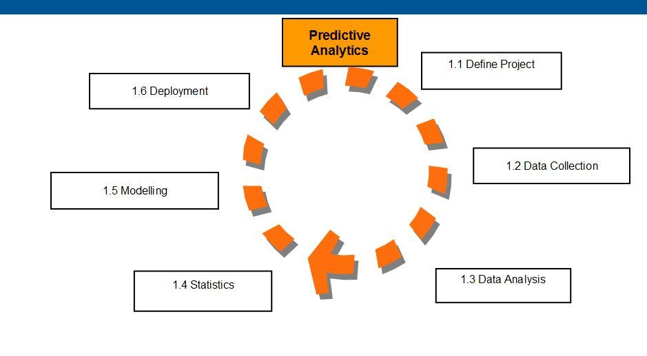

We design big data architecture to handle the ingestion, processing, and analysis of data that is too large or complex for traditional database systems. The threshold at which organizations enter into the big data realm differs, depending on the capabilities of the users and their tools.


We use Exploratory data analysis approach to identifies general pattern in data. These patterns include outliers and features of the data that might be unexpected. EDA is an important first step in any data analysis.

This project aims to understand and predict survival rates during maritime disasters, using the Titanic tragedy as a case study. By analyzing passenger data, we seek to identify key factors that influenced survival chances. This could provide insights for modern maritime safety protocols and evacuation strategies, enhancing passenger safety in current and future maritime travel. The objective of this problem is to build a predictive model that answers the question: “what sorts of people were more likely to survive?” using the passenger data (i.e., name, age, gender, socioeconomic class and more.).